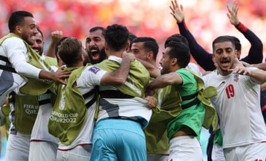

“I t’s offensive for any football fan to be prevented from participating in the World Cup, not just Iranians,” Ali Rezaei of Tehran’s Borna news agency says. In March, the national team became the second to qualify for the 2026 World Cup that will be hosted by Canada, Mexico and the United States. In June, Donald Trump authorised the dropping of bombs on Iran and hit the country with a travel ban . As things stand, while the national team will be able to enter the US next summer, fans – and perhaps media – will not.
Residents of Tehran and other cities may have had enough to deal with of late, but still, being barred from entry stings, even if Iranians have long found it difficult to get into the US. “If the US government has issues with the Iranian regime for any reason, it should not result in discrimination against Iranian citizens,” Behnam Jafarzadeh, a writer for the leading sports site Varzesh3, says. “If someone hasn’t committed any illegal activity, why should they be punished? It’s not just about the World Cup – the policy needs to change in general.”
What can Iran do? “Boycotting the World Cup is not a solution,” Siavash Pakdaman, a Tehran-based fan, says. “Refusing to play on US soil would be a dangerous precedent – any host country could start excluding teams it has issues with. Just as the Iranian delegation can and should be present at the United Nations in the US, the Iranian team should also play on American soil if the draw requires it – without relocation.”
There is a feeling that staying away would not make much difference anyway. “It would only deprive the national team of the opportunity to participate in a major tournament and would ultimately hurt Iran more,” Jafarzadeh says. “It might even be welcomed by some American officials. It could make headlines briefly, but once the tournament starts, it will be forgotten and will have achieved nothing.”
Questions have been asked – including in Iran, whose supreme leader, Ayatollah Ali Khamenei , has long banned competing against Israeli athletes – about what the international reaction would have been if Qatar had banned citizens from certain nations from attending the 2022 World Cup.
“If the USA makes it difficult for football fans to attend, then changing the host country is necessary,” Rezaei says. “Doing so would harm the USA’s reputation, not the World Cup’s. If strict entry rules remain, we should focus on protecting football. This is supposed to be a celebration of sport.”
Jafarzadeh is not confident that the competition could be taken away from the busiest of the three hosts. “It is not a challenge Fifa and [its president Gianni] Infantino would want to take on.” Perhaps there is another way. “Fifa should use all of its influence to push for a suspension of this policy at least during the World Cup.”
Iran celebrate scoring against Wales at the 2022 World Cup in Qatar. Iran will feature next year as players are exempt from the US travel ban.Photograph: Fadel Senna/AFP/Getty Images
Fifa may find it easier to place Iran in Canada or Mexico and hope that Iran don’t make it to the latter stages, when there would have to be a game in the US. “Playing in Mexico or Canada is not a real solution – it just ignores the actual problem,” Rezaei says.
Many expect it to happen anyway. “Canada has a large Iranian immigrant population, although some of them are opponents of the Iranian regime and the national team can’t count on their support,” Jafarzadeh says. “Mexico is probably a more attractive and less controversial destination for the team.”
That is another question. The Iranian-American community is more than a million strong yet many of these headed west before, or in response to, the Islamic Revolution of 1979.
“It seems that many Iranians who oppose the government consider the national team to be a representation of the regime – which I believe is wrong,” Pakdaman says. “And since a larger number of these opponents live in the US, the team may face pressure from the audience during the matches. Of course, I hope my analysis is wrong.”
Jafarzadeh, who went to the World Cups in Russia and Qatar and would love to go to the United States, says: “Some see the team as one that represents the regime, and this sentiment is even stronger among Iranians living abroad. Of course, the war with Israel has stirred feelings of patriotism among many Iranians, but I’m not sure if this will translate into support for the national team. We’ll have to wait and see how things unfold in the coming months.”
That there is time is perhaps a small reason for optimism that things could change. Iran is one of 19 countries subject to a full or partial US entry ban. Several of the others retain hope of qualifying for the first 48-team World Cup, including Sudan, Sierra Leone, Venezuela and Haiti.
“Considering that there is almost a year left until the 2026 World Cup, there is a possibility that the situation may stabilise,” says Isa Azimi, a columnist and translator, regarding Iran’s situation, though he is not confident. “Despite claims of separating politics from football, Fifa has shown that it is not particularly independent when facing major political powers.”
Especially when Infantino appears to prize his close relationship with President Trump . “If Fifa considers itself a global body independent of governments, it must stand up to such laws and not allow politics to contaminate the world of sports,” Pakdaman says. “Of course, we all know that, unfortunately, such contamination exists – especially when one side of the issue is a superpower that answers to no one. It is Fifa’s duty to treat all member countries equally, but will that actually happen?”